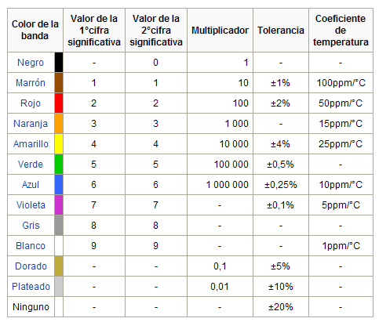

| CÓDIGO DE COLORES |
| 
Esta tabla nos servirá para explicar el código de colores de las resistencias fijas, en la pantalla tienes una ilustración simplificada para practicar los ejercicios propuestos. Vamos a ver un par de ejemplos: a) Supongamos una resistencia con los colores amarillo, azul, rojo, dorado. Primero tomamos los valores correspondientes a los dos primeros colores, amarillo y azul. El amarillo es 4 y el azul 6; tenemos por lo tanto 46 Ω por el momento. A continuación nos fijamos en el tercer color, el rojo. El tercer color es el número de ceros que tenemos que añadir; habrá que añadir dos ceros, es decir, multiplicar por 100. 46 x 100 = 4600 Ω = 4,6 kΩ. Cuando el valor supera los 1000 Ω, es más correcto hablar de kΩ. Por último, el cuarto color nos indica la tolerancia. El fabricante de la resistencia no nos puede garantizar que el valor exacto sea 4,6 kΩ, hay un margen de error. Si el último color es oro, quiere decir que esa tolerancia o margen de error es del 5%. La resistencia puede tener un valor un 5% mayor o menor de 4,6 kΩ. Por lo tanto, el valor es 4,6 kΩ ± 5%. b) Supongamos ahora una resistencia con los colores negro, naranja, dorado y plateado. Empezamos por los dos primeros colores. El negro es 0 y el naranja 3, por lo tanto partimos de un valor de 3 Ω. El tercer color es dorado; cuando el tercer color es oro o plata, en vez de multiplicar hay que dividir el valor de la resistencia, en este caso entre 10. 3 : 10 = 0,3 Ω. Por último, añadimos la tolerancia. Como el cuarto color es plata, será de un 10%. Por tanto, el valor es 0,3 Ω ± 10%. En electrónica podemos trabajar con resistencias tanto muy grandes como muy pequeñas. |